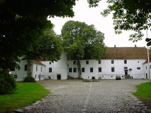
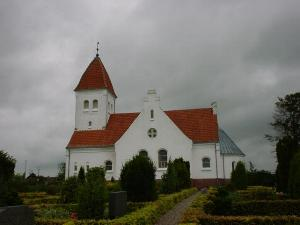
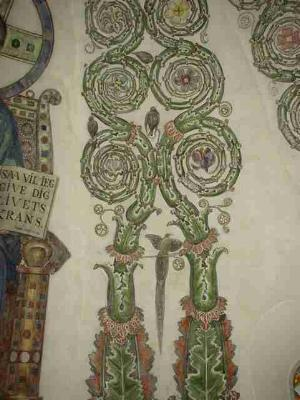
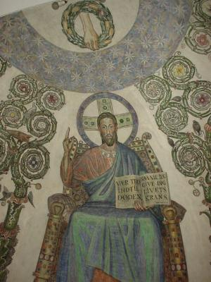
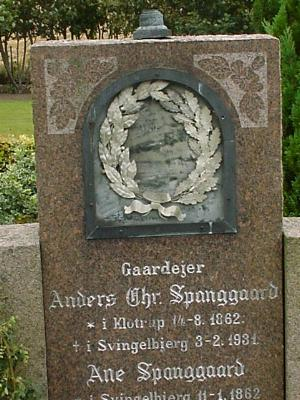
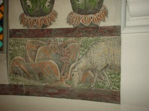

 |
Landsbyen Svingelbjerg har i virkeligheden to kirker. Den første blev antagelig bygget omkring år 1200, men blev revet ned igen allerede den 5. december 1566 af herremanden på Bonderup, nu Lerkenfeldt. Jørgen Lykke hed han. Et gammelt ord siger: "Jørgen Lykke den røde lagde Svingelbjerg kirke øde". Det er dog næppe hele sandheden, at han nedrev kirken blot fordi han skulle bruge stenene til at forlænge koret på Vesterbølle kirke, samt til opførelse af et tårn på herregården. Det skyldes nok snarere, at der var for få gårde til at opretholde tiende til kirkens vedligehold og drift. Men kritikken var alligevel stor. Med præsten Hr. Mads fra Ullits og Foulum i spidsen, der ligefrem prædikede om kirkeran fra prædikestolen. Hr. Mads blev dømt og henrettet for at være papist - altså pavevenlig, hvilket jo selvsagt ikke var så velset efter reformationen 30 år tidligere. Hr. Mads blev henrettet mellem sine kirker, der hvor nu Ullits by ligger. Det er klart at dette drama ikke glemtes i sognet. Og det gav stof til fantasien og digterne. Læs blandt andet St. St. Blichers novelle: "Vinhandleren og Herremanden" eller den lokale Thit Jensens historiske roman: "Jørgen Lykke". Begge forfattere bruger historien i deres arbejder. |
| Den gamle kirke er der intet tilbage af, men i dag står der et trækors på det sted, hvor den lå. Og hvis man leder kan man finde det mellem gårdene på Hestbækvej mellem Klovenhøjvej og Ullitshøjvej. Den nye kirke Kirken, der er i Svingelbjerg i dag er en såkaldt korskirke, da grundplanen, som navet siger det, er et kors. I byzantinsk stil. Kirken blev bygget i 1907 og indviet i 1908 og var dengang en annekskirke til Vesterbølle sogn. Siden 1975 har det været en del af pastoratet Ullits, Foulum & Svingelbjerg sogne. Hele byggeriet og kirkegårdsanlæg kostede den nette sum af 45.000 kroner. Arkitekten var S.F. Kühnel fra Århus. Huset står i dag meget harmonisk og smukt i landskabet, så det kan ses vidt omkring. |
 |
 |
Niels Larsen-Stevns I sommeren 1911 malede kunstneren Niels Larsen-Stevns kalkmaleriet i korhvælvingen. Han var på egnen i forbindelse med Joakim Skovgaards udsmykning af Viborg Domkirke, hvor Larsen-Stevns arbejdede som dennes assistent. Kunstneren fik 500 kroner for arbejdet. Beløbet var samlet ind blandt sognets beboere. Arbejdet tog to uger og i den tid boede Larsen-Stevns hos sognepræsten. Udsmykningen er i øvrigt nævnt i Mikael Wivels roste værk: "Lysets tøven", om Larsens-Stevns liv og værk. Udsmykningen er et såkaldt freskomaleri. En gammel vægmaleriteknik, som var kendt allerede i Romertiden. Den opføres på våd cement, og når den tørrer opnår det en stor holdbarhed. Det våde puds stiller store krav til malerens kunnen, da der ikke er tid eller mulighed for at rette eventuelle fejl. Det nødvendiggør en nøje planlægning af hele motivet inden man går i gang. Man fører motivet over fra kartoner, som så bliver sat op i små felter, som så gøres færdig efter tur, så det ikke tørre hurtigere end maleren kan følge med. |
| Larsen-Stevns blev valgt frem for en anden kendt kunstner på den tid, nemlig Olaf Rude. Larsen-Stevns lavede fem udkast, men ingen af dem faldt i biskoppens smag, blandt andet fordi de alle krævede at man murede et vindue til. Men til sidst fik kunstneren frie hænder og resultatet ses nu. I 1998 blev freskoen renoveret af National Museet. Freskoens motiv er den sejrende Kristus, der sidder på sin guddommelige trone og lyser velsignelsen ud mod menigheden. Der er klare referencer til både den græsk ortodokse kirke og den byzantinske ikontradition. Noget Larsen-Stevns stiftede bekendtskab med under en rejse i både Italien, Tyrkiet og Grækenland. I øvrigt i fin samklang med kirkens grundform, der også henter sin inspiration fra det østlige Europa og den tidligste kristendom. Typisk derfra er eksempelvis Kristi øjne, der ser på én uanset, hvor i kirken man befinder sig. |
 |
 |
Over Kristi hoved holder Guds højre hånd en krans. Ude på kirkegården kan an finde flere af disse gyldne og stedsegrønne kranse, som aldrig vil visne. Disse kranse er i øvrigt en tradition i området. Og oprindelig en gave ved sølvbryllupper, som så blev gemt og sat i gravstenen. Kransen er en henvisning til de ord, der står i den bog, som Kristus viser frem: "Vær tro til døden, og jeg vil give dig livets krans". Ordene er fra Johannes Åbenbaringen og er skrevet til menigheden i Smyrna, der led mange trængsler på det tidspunkt. Men kransen bringer også apostlen Pauli ord: "Ved I ikke, at de, der er med i et løb på stadion, alle løber, men kun én får sejrsprisen? Løb sådan, I vinder! Men enhver idrætsmand er afholdende i alt - de andre for at få en sejrskrans, der visner, men vi for at få en, der ikke visner" (1.Kor. 9,24f). Kransen peger altså hen på det evige liv, som var det den sejrende Kristus giver til menneskene i arv. |
| Under selve Kristusfiguren - også kaldet en Pantorcrator - er der en bort med græssende får, som viser hen på de Jesu ord, om at han er den gode hyrde, og vi hans hjord (Johs. 10,11-16). Den frodige vækst omkring Kristus har Larsen-Stevns hentet inspiration til fra Maria Mariore Kirken i Rom, som en forestilling om Edens have, hvor alt er frodigt og frugtbart og godt (1.Mos.1). Mellem de farvestrålende eksotiske fugle er der også danske fugle, som stæren til eksempel. I det ene hjørne er der tegnet mere op med sort, men det er aldrig blevet fyldt ud med farve. En forglemmelse i kampen med den våde cement - måske? Troels Laursen Sognepræst |
 |